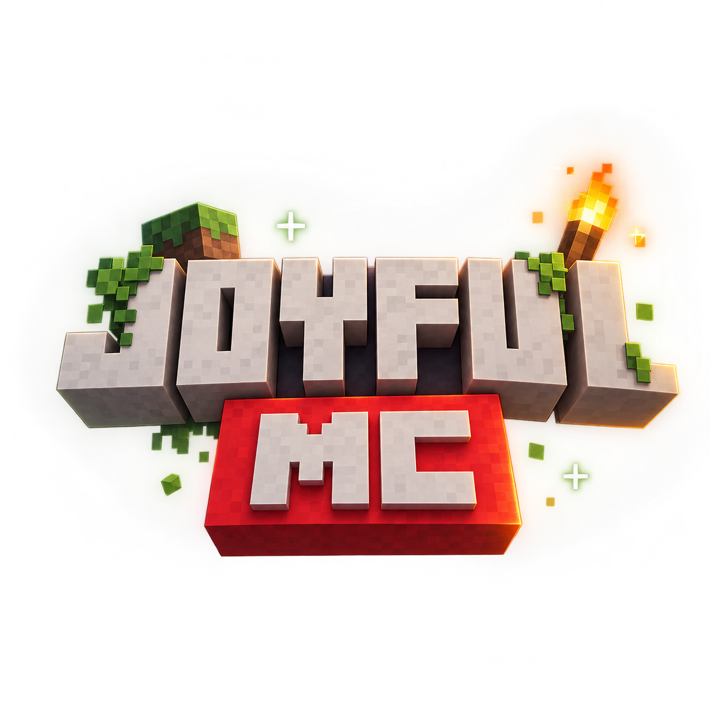

Ламповая атмосфера
Joyful.MC создан не ради соревнований, конфликтов или выяснения, кто тут самый главный. Это сервер для обычной игры, общения, строительства и хорошего вайба.

✦ Joyful.MC ✦Место, где можно просто зайти в Minecraft, расслабиться, построить что-нибудь красивое и провести время с друзьями.
joyfulmc.serveminecraft.net
Joyful.MC создан не ради соревнований, конфликтов или выяснения, кто тут самый главный. Это сервер для обычной игры, общения, строительства и хорошего вайба.
Зашёл, увидел друзей, построил дом, пошёл исследовать мир — вот примерно такой уровень сложности. Никакой необходимости превращать Minecraft в работу.
Здесь хочется сохранить спокойную атмосферу. Уважение, дружелюбие и немного здорового безумия Minecraft — вполне достаточный набор для хорошего сервера.
Иногда лучший план на вечер — зайти в Minecraft и вообще никуда не спешить.
Здесь будут появляться места, где можно найти Joyful.MC.
Небольшой инди-проект, который начался с простой идеи.
( c ) Joyfull MC ( 2026 - 2027 )
* Не являемся коммерческой организацией, просто инди проект, если так можно выразиться.
Спонтанная мысль сделать свой уютный сервер.
Идея получила имя, адрес и собственный маленький мир.
Сайт, сервер и всё остальное могут постепенно меняться вместе с проектом.